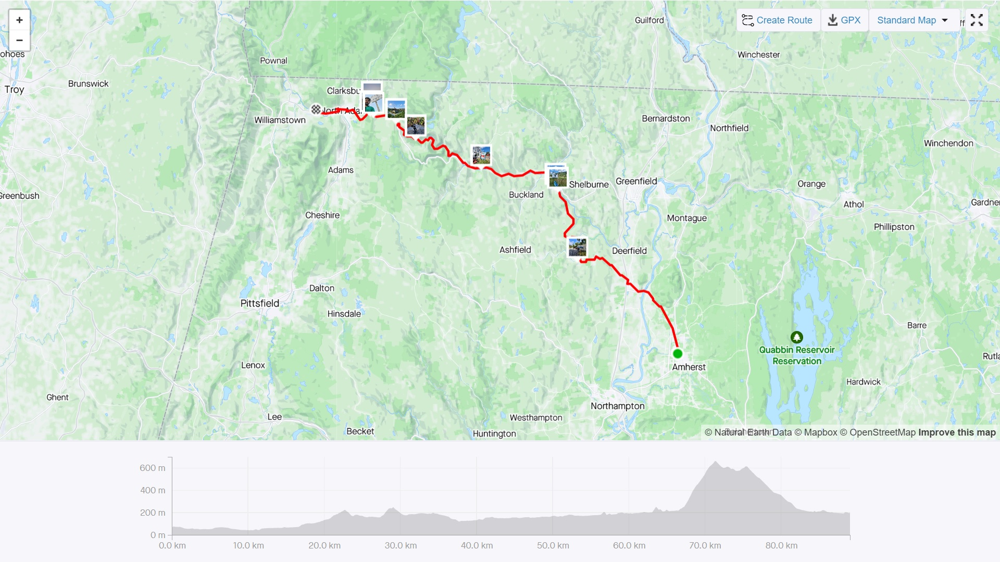
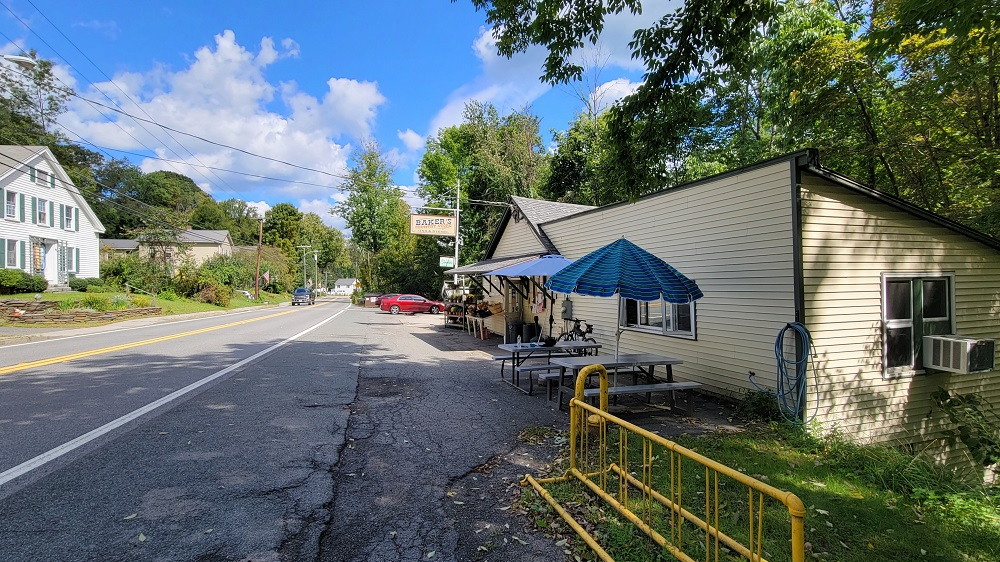
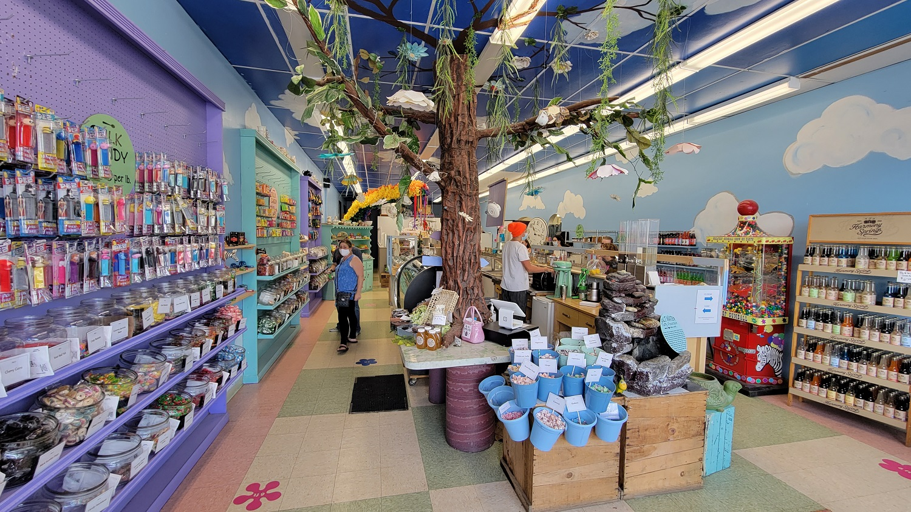
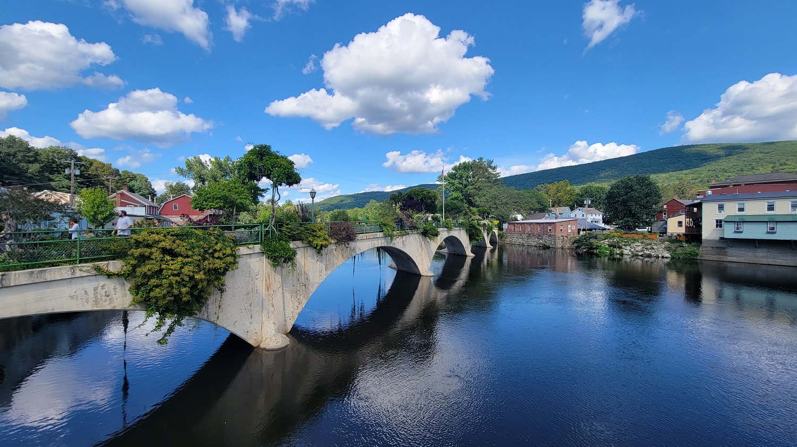
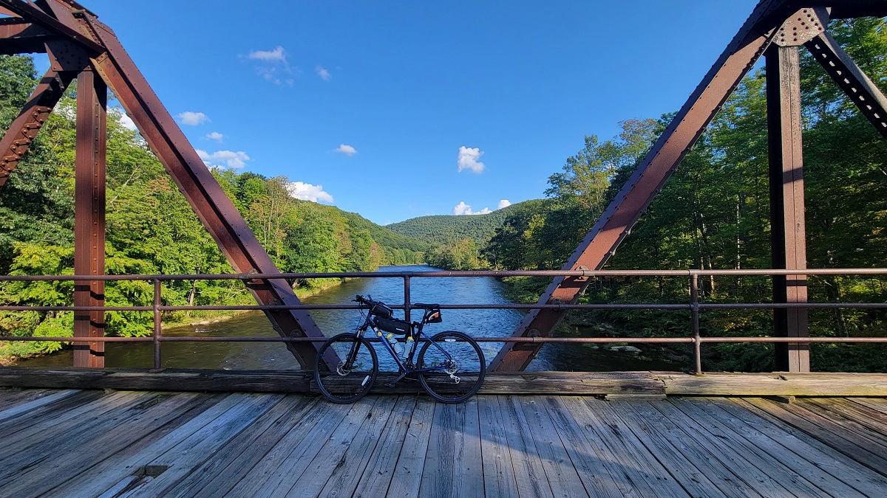
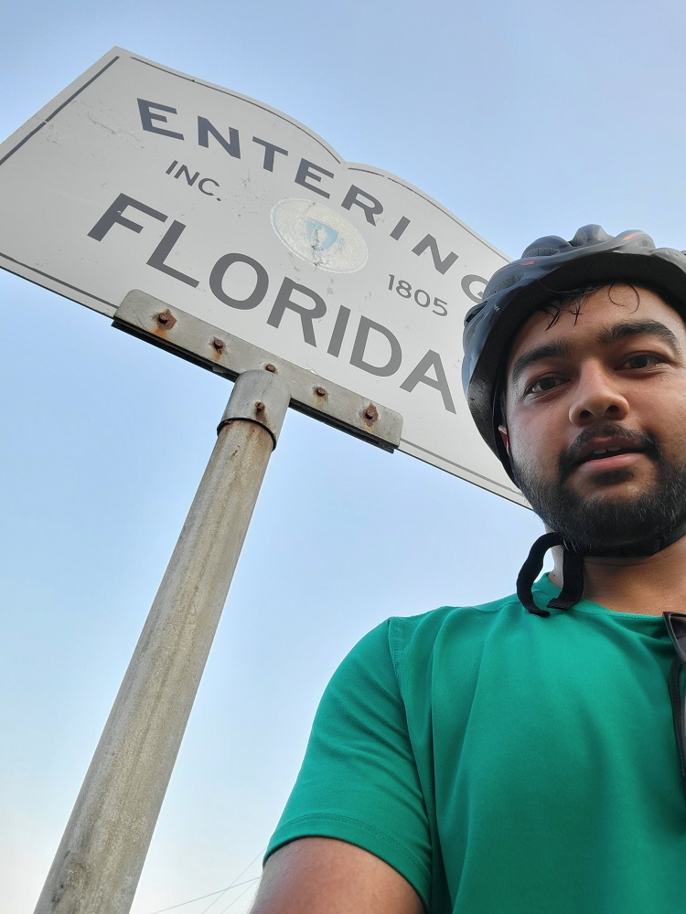
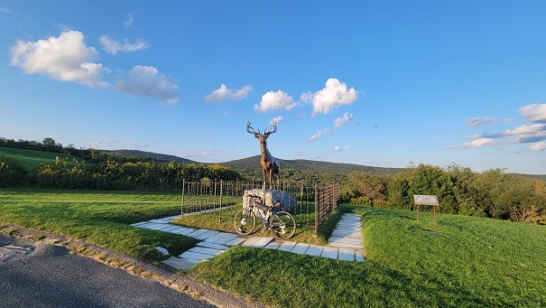
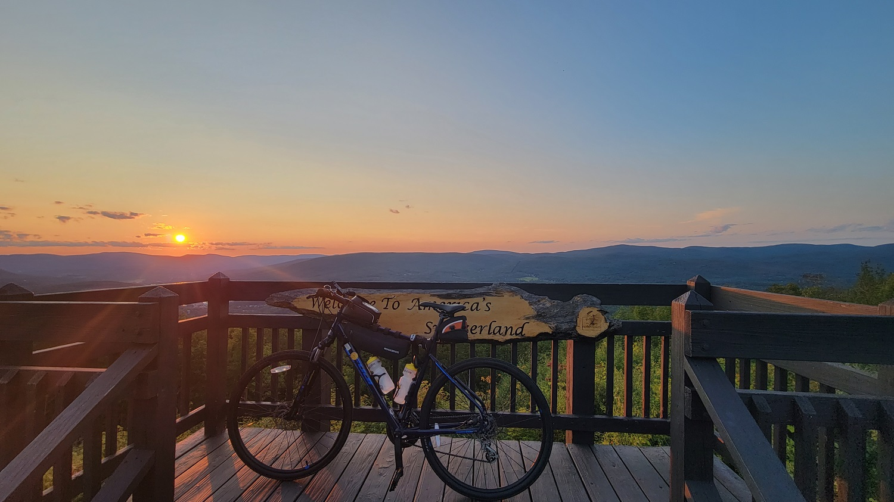
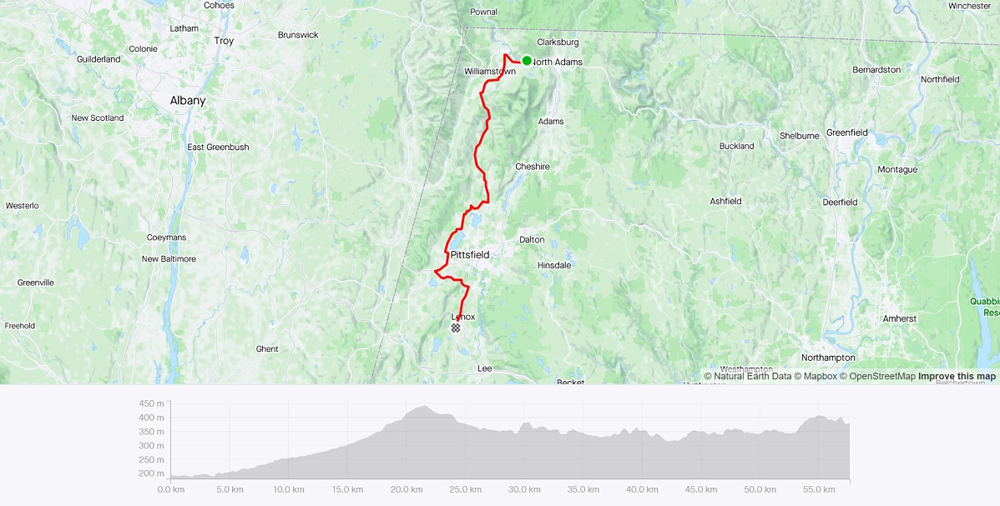

The Mohawk Trail
Riding across the northern Berkshire hills along the Mohawk Trail (Route 2)

Ride With GPS Links
Day 1 - Amherst to North Adams
Day 2 - North Adams to Lenox
In September 2021, I rode along Route 2 (The Mohawk Trail) starting from Amherst, and ending at North Adams. This was a pivotal ride - one that made me realize I had covered a very decent amount of the state by bike. This ride was also prompted by my successful completion of the four-day Bostreal ride, where I rode with a group of passionate biking folks from Boston to the North Hero islands in Vermont. As the name suggests, the ride is generally from Boston to Montreal, but due to COVID related border restrictions, we stopped just north of Burlington, VT.
 Route and Elevation Profile in Strava
The Ride
The day started by taking a PeterPan bus from Boston to Amherst. The first 10 miles or so of the ride were relatively flat. This was all within the Pioneer Valley, with sweeping views of the Connecticut River.
Conway
I stopped at a small roadside general store in Conway. The store had a bike rack! Most likely indicative of this route being popular with bike riders. This stop wasn’t planned, but with the next few miles being relatively rolling hills, I wanted to be sure of enough water, and a snack, until the next stop in Shelburne Falls.
 Conway General Store, Conway, MA
Shelburne Falls
Shelburne Falls is a small town with a really famous Bridge of Flowers right in the heart of town. I spent a little time walking around, and also got an ice-cream from a really funky looking ice-cream shop called Mo’s Fudge Factor - a really nice place!
 Mo’s Fudge, Shelburne Falls, MA
 Bridge of Flowers, Shelburne Falls, MA
Florida, Massachusetts - wait…what??
After a nice short pause in Shelburne Falls, the only food/water point I would have before North Adams was in Charlemont. Charlemont is a small ski town on Route 2. The main climbing portion of my ride was now imminent. Problematically, there were going to be no stores anywhere until North Adams, so I was going to have to ration my water. This was a very bad decision indeed. I was out of water about halfway through climbing up from the Hoosac Tunnel, and developed bad cramps in my calves. But hey - I am alive and biking, so it wasn’t all that bad!
After a gruelling climb up the Whitcomb Hill Road, (it was a nice enough ride along the Deerfield River on Zoar Road) I arrived in Florida, Massachusetts! At the end of the hills, just before descending into the Berkshire Valley, I stopped at the Wigwam Western Summit, and caught a brilliant sunset view of Mt Greylock.
 Bike on a bridge on the Deerfield River, off Zoar Road
 Town Entry Sign, Florida, MA
 Golden Elk, Whitcomb Summit Retreat
 View into the Berkshire Valley, from the Wigwam Western Summit
This was a long, and difficult, yet highly rewarding ride. I learned a lot about pace management, stocking up on food/water, as well as managing my refreshment breaks.
Day 2 - Riding down Berkshire Valley
The next day, I had to catch my PeterPan bus back to Boston from Lenox.
 Route and Elevation Profile in Strava